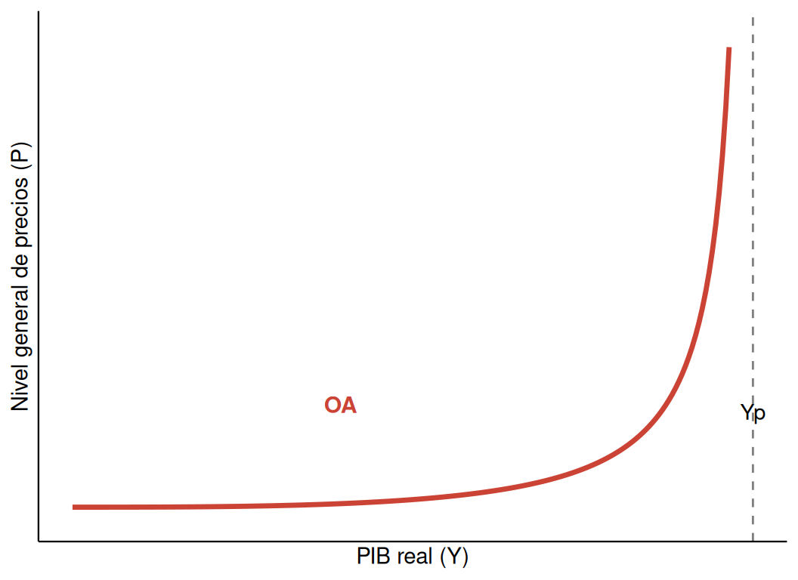
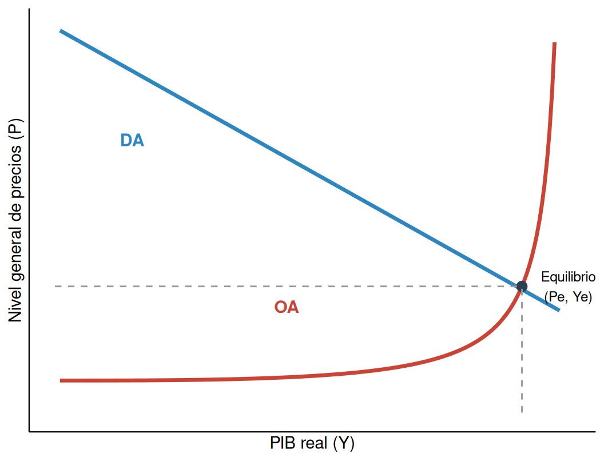

| Preguntas microeconómicas | Preguntas macroeconómicas |
|---|---|
| ¿Qué factores determinan la elección de un consumidor entre dos bienes? | ¿A qué se debe el aumento del consumo agregado de las familias de un país? |
| ¿Cuál es el nivel de producción óptimo para una empresa concreta? | ¿Qué medidas fomentan el crecimiento del PIB nacional? |
| ¿Por qué fluctúa el precio del alquiler en una ciudad concreta? | ¿Cuáles son las causas de la inflación generalizada en la economía? |
8 La macroeconomía y el Producto Interior Bruto
A principios del siglo XXI, hacia 2005, la economía española atravesaba una fase de intensa expansión: el tejido empresarial crecía de forma sostenida y los egresados universitarios encontraban trabajo casi de inmediato. El discurso político de la época, con gobiernos de distinto signo, insistía en la solidez de España dentro del panorama económico internacional. Sin embargo, esta tendencia se revirtió de forma drástica a partir de la crisis financiera de 2008: el país entró en una recesión profunda, con despidos masivos y un fuerte aumento del desempleo.
Este vuelco demuestra algo importante: las oportunidades laborales y el bienestar de las personas no dependen solo de su formación o su esfuerzo individual, sino que están condicionados por la situación macroeconómica del país en su conjunto. Para entender esa situación es necesario analizar las variables que los medios de comunicación y las instituciones oficiales reportan de forma recurrente: el Producto Interior Bruto, la tasa de desempleo, el IPC y los tipos de interés. Estas son las llamadas variables macroeconómicas, objeto de este tema.
8.1 Qué estudia la macroeconomía
Hasta ahora el análisis se ha centrado en la microeconomía: el comportamiento de familias y empresas en mercados concretos, como el mercado de la vivienda o el del café. Para entender el funcionamiento de la economía en su conjunto es necesario adoptar una perspectiva más amplia, la de la macroeconomía.
NotaDefinición
La macroeconomía es la parte de la economía que estudia el comportamiento de la economía en su conjunto, es decir, la suma de las decisiones de todos los agentes económicos —familias, empresas y sector público— que integran un país. Su objeto de estudio no es una empresa o un mercado concreto, sino magnitudes globales como el gasto total de una nación, el nivel general de empleo o la evolución de los precios a escala nacional.
La diferencia entre ambas ramas puede resumirse con una comparación: la microeconomía analiza por qué un estudiante concreto obtiene un determinado rendimiento académico, mientras que la macroeconomía estudia qué factores determinan la tasa de aprobados de todo un centro educativo y qué medidas podrían mejorar ese promedio.
Ambas ramas están estrechamente relacionadas, porque los fenómenos macroeconómicos son el resultado de millones de decisiones individuales. La crisis inmobiliaria de 2008 ilustra esta conexión: la paralización de la actividad en el sector de la construcción —un mercado concreto— redujo el consumo de las familias afectadas, lo que a su vez provocó una caída de la producción nacional y un aumento generalizado del desempleo.
8.2 Los objetivos macroeconómicos
Indicadores como el crecimiento del PIB o la evolución del IPC condicionan de forma directa las expectativas de los consumidores, la viabilidad de las empresas y la capacidad de actuación del Estado. Para valorar si una economía se encuentra en una situación sólida o vulnerable, se analiza el grado de cumplimiento de cinco objetivos macroeconómicos fundamentales.
Crecimiento de la producción. El aumento sostenido de la producción de bienes y servicios permite satisfacer un mayor volumen de necesidades sociales, favorece la creación de empleo y aumenta la recaudación tributaria, lo que dota al Estado de más recursos para el gasto social. Se mide con el PIB.
Fomento del empleo. El desempleo priva a las personas de su principal fuente de ingresos y deteriora su calidad de vida. El objetivo es minimizar la tasa de desempleo: el porcentaje de la población activa que, estando disponible para trabajar, no encuentra ocupación.
Estabilidad de precios. El incremento generalizado y persistente de los precios —la inflación— erosiona el poder adquisitivo de los ciudadanos, especialmente el de quienes tienen menos renta. Se controla a través del IPC.
Equilibrio presupuestario. Se produce cuando los ingresos del Estado, principalmente por vía de los impuestos, bastan para cubrir sus gastos. Si el gasto es superior, aparece el déficit público, que obliga al Estado a endeudarse; el pago de los intereses de esa deuda puede llegar a comprometer partidas presupuestarias esenciales, como la sanidad o la educación.
Equilibrio exterior. Un país debe aspirar a que sus transacciones con el resto del mundo estén equilibradas. Si las importaciones superan de forma sistemática a las exportaciones, se genera una dependencia financiera del exterior. Este flujo se registra en la balanza de pagos.
| Objetivo | Justificación | Indicador |
|---|---|---|
| Crecimiento | Incrementa el bienestar material y la recaudación fiscal | PIB |
| Empleo | Garantiza la fuente de ingresos de la población activa | Tasa de desempleo |
| Estabilidad de precios | Protege el poder adquisitivo de los ciudadanos | IPC |
| Equilibrio público | Evita el endeudamiento excesivo y el coste de los intereses | Déficit público |
| Equilibrio exterior | Previene la dependencia financiera frente a otros países | Balanza de pagos |
La evolución de estos indicadores influye directamente en el comportamiento de los agentes económicos. En un entorno de crecimiento y estabilidad, las familias tienden a consumir y ahorrar con más confianza, mientras que la incertidumbre macroeconómica contrae el gasto familiar. Una coyuntura favorable anima a las empresas a invertir y ampliar plantilla; en fases de recesión, la caída de la demanda suele forzar ajustes operativos y de personal. El Estado, por su parte, adapta sus políticas —estímulos fiscales o medidas de austeridad— en función de si la economía necesita un impulso o un control de sus desequilibrios.
8.3 El Producto Interior Bruto: concepto y delimitación
NotaDefinición
El Producto Interior Bruto (PIB) es el valor monetario total de los bienes y servicios finales producidos dentro de las fronteras de un país durante un periodo determinado.
Esta definición se apoya en varios criterios precisos que delimitan qué se contabiliza y qué no.
El PIB usa el precio de mercado como denominador común, lo que permite sumar en una única cifra bienes tan distintos como materias primas y servicios tecnológicos. Computa tanto bienes tangibles como servicios intangibles, sin distinguir entre industria y sector servicios. Para evitar la doble contabilización, solo se registra el valor de los bienes finales: los bienes intermedios que las empresas compran para transformarlos no se cuentan por separado, porque su valor ya queda implícito en el precio del producto final.
El PIB es una variable de flujo, referida a la producción de un periodo concreto —normalmente un año—, por lo que excluye las transacciones de bienes de segunda mano, cuyo valor ya se contabilizó cuando se produjeron. Sigue además un criterio de territorialidad: se contabiliza la producción generada dentro de las fronteras del país con independencia de la nacionalidad de quien la realiza. Por ejemplo, la actividad de un profesional extranjero en España computa en el PIB español, mientras que la de un residente español que trabaja en el extranjero no.
Por último, el PIB solo recoge las actividades que dan lugar a una transacción de mercado registrada. Quedan fuera el trabajo doméstico y el autoconsumo —que, pese a tener valor social, no generan intercambio monetario— y también la economía sumergida o ilícita.
TipAlgunos casos prácticos
- Una reparación pagada en efectivo y sin factura no se contabiliza en el PIB: es economía sumergida, y su ausencia de registro legal impide su cómputo oficial.
- Cocinar en casa o limpiar el propio hogar no computa en el PIB; solo se registran los bienes comprados en el mercado para esos fines (ingredientes, productos de limpieza), no el valor del trabajo dedicado.
- Si un profesional español da una conferencia en el extranjero, esa actividad se integra en el PIB del país donde se presta el servicio, no en el de origen, por el criterio de territorialidad.
- Las reparaciones de mantenimiento de un hotel son un bien intermedio: su valor no se contabiliza aparte, sino que queda reflejado en el precio final de la habitación facturada al cliente.
8.4 Metodologías de medición del PIB
Existen tres métodos equivalentes para calcular el PIB, cada uno de los cuales analiza la actividad económica desde una perspectiva distinta.
8.4.1 El método del gasto
Este enfoque calcula el PIB sumando el gasto total realizado por los distintos agentes económicos en la compra de bienes y servicios finales producidos dentro del país. La demanda agregada se descompone en cuatro categorías.
El consumo privado (C) es el gasto de las familias en bienes y servicios, y es el componente de mayor peso en el PIB —en torno al 60 % en las economías desarrolladas—. La inversión (I) recoge el gasto de las empresas en bienes de capital —maquinaria, instalaciones, existencias— y, por convención estadística, también la inversión de las familias en vivienda. El gasto público (G) incluye las compras de bienes y servicios de las administraciones públicas, su inversión y los salarios de los empleados públicos; las transferencias, como las pensiones o las prestaciones por desempleo, quedan excluidas porque no son una contraprestación por una producción corriente, sino una redistribución de renta. Por último, las exportaciones netas (X − M) reflejan el saldo comercial con el exterior: se suman las exportaciones, que son demanda extranjera de producción nacional, y se restan las importaciones, porque corresponden a un gasto realizado en el país cuya producción ha tenido lugar fuera.
\[PIB = C + I + G + (X - M)\]
8.4.2 El método de las rentas
Este método calcula el PIB sumando la remuneración de los factores productivos que han intervenido en el proceso de producción, ya que el valor de mercado de lo producido debe equivaler a la suma de las rentas generadas. Se compone de la remuneración de asalariados (RA) —salarios y cotizaciones sociales de los trabajadores— y del excedente bruto de explotación (EBE) —intereses, alquileres, beneficios empresariales y depreciaciones, es decir, las rentas que compensan el desgaste del capital fijo—.
\[PIB = RA + EBE\]
8.4.3 El método del valor añadido
Para evitar la doble contabilización, este método no suma el valor total de las ventas de cada empresa, sino únicamente el valor añadido en cada fase de la cadena productiva: la diferencia entre el valor de lo que produce una empresa y el coste de los bienes intermedios que compra a otras.
| Fase de producción | Empresa | Valor de la venta | Bienes intermedios | Valor añadido |
|---|---|---|---|---|
| Extractiva | Minas, S. A. | 4 000 € | 0 € | 4 000 € |
| Siderúrgica | Aceros, S. A. | 9 000 € | 4 000 € | 5 000 € |
| Automotriz | Coches, S. A. | 20 000 € | 9 000 € | 11 000 € |
| TOTAL | — | — | 20 000 € |
Como muestra la Tabla 8.3, sumar las ventas brutas de las tres empresas (33 000 €) sobreestimaría la actividad económica, porque el valor del hierro y del acero se contaría varias veces. El PIB real —20 000 €— coincide con el valor del bien final vendido al consumidor: la suma de los valores añadidos de cada fase.
| Enfoque | Pregunta clave | Cálculo |
|---|---|---|
| Del gasto | ¿Quién compra la producción? | C + I + G + (X − M) |
| De la renta | ¿Cómo se reparte el valor generado? | Remuneración de asalariados + excedente bruto de explotación |
| De la producción | ¿Qué valor se crea en cada fase? | Suma del valor añadido de todos los sectores |
8.5 Del PIB a la renta disponible
A partir del PIB, la contabilidad nacional permite obtener otras magnitudes que reflejan mejor la riqueza real de un país y la capacidad de consumo de sus ciudadanos, mediante una serie de ajustes técnicos relacionados con la valoración, el desgaste del capital y la nacionalidad de los factores.
El PIB a precios de mercado refleja el valor final pagado por el consumidor, incluidos los impuestos; el PIB a coste de los factores indica en cambio el valor de la producción a pie de fábrica:
\[PIB_{cf} = PIB_{pm} - T_i + Subv\]
donde \(T_i\) son los impuestos indirectos, como el IVA, y \(Subv\) las subvenciones a la explotación. Por otro lado, los activos de capital —maquinaria, instalaciones— sufren un desgaste físico y tecnológico llamado depreciación. El Producto Interior Neto (PIN) ofrece una visión más precisa de la riqueza generada al descontar ese coste:
\[PIN = PIB - Depreciación\]
Mientras que el PIB se rige por el criterio de territorialidad —lo producido dentro del país, sea cual sea la nacionalidad de quien lo produce—, el Producto Nacional Bruto (PNB) atiende al criterio de nacionalidad: recoge la producción de los factores nacionales, estén donde estén. Para obtenerlo, hay que sumar al PIB las rentas que los factores nacionales obtienen en el extranjero (RFN) y restar las rentas que los factores extranjeros obtienen dentro del país (RFE):
\[PNB = PIB + RFN - RFE\]
La Renta Nacional (RN) es el valor total de las rentas percibidas por los factores de producción de un país, y equivale contablemente al Producto Nacional Neto a coste de los factores:
\[RN = \text{Salarios} + \text{Alquileres} + \text{Intereses} + \text{Beneficios}\]
Sin embargo, no toda la Renta Nacional llega efectivamente a los hogares. Para obtener la Renta Personal Disponible (RPD) —la cantidad de la que disponen las familias para consumir o ahorrar— hay que restar de la Renta Nacional los impuestos directos (\(T_d\)), las cotizaciones a la Seguridad Social (CSS) y los beneficios no distribuidos por las empresas (\(B_{nd}\)), y sumar las transferencias que reciben sin contraprestación directa, como pensiones o subsidios (\(Tr\)):
\[RPD = RN - T_d - CSS - B_{nd} + Tr\]
ImportanteNota
La Renta Personal Disponible es el indicador clave para predecir el comportamiento del consumo privado de un país, porque representa la capacidad real de gasto de sus ciudadanos una vez pagados los impuestos y recibidas las ayudas públicas.
| Para pasar de... | A... | Operación matemática |
|---|---|---|
| Precios de mercado (pm) | Coste de factores (cf) | − Ti + Subv |
| Bruto (B) | Neto (N) | − Depreciación |
| Interior (I) | Nacional (N) | + RFN − RFE |
| Renta Nacional (RN) | Renta Disponible (RPD) | − Td − CSS − Bnd + Tr |
8.6 La relevancia del PIB y el crecimiento económico
El PIB no es solo un indicador estadístico: es la métrica principal para evaluar el éxito o el fracaso de las políticas económicas de un Estado. El incremento del PIB de un periodo a otro se denomina crecimiento económico, y es una prioridad para los gobiernos por su impacto en dos áreas. Al incrementarse la producción, los agentes económicos perciben mayores ingresos —salarios, alquileres, intereses, beneficios—, lo que mejora la calidad de vida media de la población; y un PIB al alza incrementa además la base imponible, lo que permite al Estado recaudar más sin necesidad de subir los tipos impositivos, facilitando la inversión en servicios públicos.
Existe además una correlación histórica estrecha entre el crecimiento del PIB y la creación de empleo: para producir más, las empresas generalmente necesitan contratar más trabajadores; cuando la producción se estanca o cae, se genera un excedente de capacidad que suele derivar en despidos.
| Periodo | Evolución del PIB | Tasa de paro |
|---|---|---|
| Expansión (1993-2007) | Crecimientos anuales del 3-5 % | Del 24,5 % (1993) al 8 % (2007) |
| Gran Recesión (2008-2013) | Caídas de hasta el −3,8 % anual | Superior al 26 % en 2013 |
| Recuperación (2014-2025) | Crecimiento sostenido (salvo el −10,8 % de 2020) | En torno al 10 % en la actualidad |
TipAutomatización y crecimiento
El avance de la automatización y la robótica plantea un reto para esta relación histórica entre PIB y empleo: cabe preguntarse si en el futuro harán falta tasas de crecimiento del PIB todavía mayores para mantener los mismos niveles de ocupación.
8.7 Las limitaciones del PIB como indicador de bienestar
El PIB per cápita relaciona el valor total de la producción con el número de habitantes de un país, para obtener una media de la riqueza teórica que correspondería a cada ciudadano:
\[\text{PIB per cápita} = \frac{\text{PIB total}}{\text{Número de habitantes}}\]
Las disparidades globales son extremas: países como Luxemburgo superan los 120 000 € de PIB per cápita, mientras que naciones en vías de desarrollo como Burundi apenas superan los 300 €; en España, la cifra ronda los 32 500 €. Pero se trata de un promedio estadístico que no refleja la realidad de cada individuo ni su grado de satisfacción.
Como advirtió el político estadounidense Robert Kennedy en 1968, el PIB «lo mide todo, excepto lo que hace que valga la pena vivir la vida». Son varias las razones por las que resulta insuficiente para medir la calidad de vida. No registra la economía sumergida ni las actividades no remuneradas: el trabajo doméstico, el cuidado de familiares o el voluntariado generan un enorme valor social que queda fuera del cómputo, mientras que la economía sumergida —que en España puede suponer cerca del 20 % del PIB real— tampoco se contabiliza al no estar declarada. No contabiliza el tiempo de ocio: un país podría aumentar su PIB si su población trabajase más horas, aunque el bienestar general disminuyera por el agotamiento. Ignora las externalidades negativas: el PIB registra la producción de una fábrica, pero no resta el daño ambiental que esta genera; de hecho, si un desastre ecológico exige labores de limpieza, el PIB aumenta por ese gasto, aunque el bienestar social haya empeorado. No distingue calidad de cantidad: el valor monetario no equivale a la utilidad, y un dispositivo actual de 500 € puede ser muy superior a uno de 1000 € de hace dos décadas. Y se ve distorsionado por la inflación: si el PIB nominal sube solo porque suben los precios, la capacidad de consumo real de los ciudadanos no mejora en la misma medida.
NotaDefinición
El índice de Gini es la medida estándar de la desigualdad de ingresos de un país. Oscila entre 0 (igualdad total) y 1 (máxima desigualdad, donde una sola persona concentraría toda la renta).
Mientras que el PIB per cápita es una media aritmética que puede ocultar grandes bolsas de pobreza, el índice de Gini mide cómo se reparte esa «tarta» económica entre la población. Un PIB per cápita alto acompañado de un índice de Gini elevado señala una sociedad fracturada, en la que el crecimiento económico no beneficia a la mayoría. Junto al Gini, el Índice de Desarrollo Humano (IDH) —presentado en el tema del desarrollo económico— completa el diagnóstico incorporando salud y educación, dos dimensiones del bienestar que el PIB tampoco recoge.
8.8 La demanda agregada
Así como en microeconomía se analiza la demanda de un bien concreto en función de su precio, la macroeconomía estudia la Demanda Agregada (DA): la cantidad total de bienes y servicios que familias, empresas, sector público y sector exterior están dispuestos a adquirir a un determinado nivel general de precios.
Contablemente, la Demanda Agregada coincide con el PIB calculado por el método del gasto, y se descompone en los mismos cuatro componentes:
\[DA = C + I + G + (X - M)\]
La curva de Demanda Agregada relaciona el nivel general de precios (en el eje vertical) con la producción total o PIB real (en el eje horizontal), y tiene pendiente negativa: cuando el nivel general de precios baja, aumenta la cantidad total demandada. Esta relación se explica principalmente por el efecto riqueza: cuando los precios medios de la economía disminuyen, el valor real del dinero de los agentes aumenta, de modo que con la misma renta nominal las familias pueden comprar más bienes y servicios, lo que incrementa el gasto total. Una bajada de precios también tiende a reducir los tipos de interés —incentivando la inversión— y a mejorar la competitividad exterior —aumentando las exportaciones—, lo que refuerza esa pendiente negativa.
8.8.1 Los determinantes de la demanda agregada
Al igual que ocurre con la demanda de un bien concreto, conviene distinguir entre un movimiento a lo largo de la curva de DA —causado únicamente por un cambio en el nivel general de precios— y un desplazamiento de toda la curva —causado por un cambio en cualquiera de sus componentes—. Un aumento de la confianza de los consumidores, una bajada de los tipos de interés, un incremento del gasto público o una mejora de la competitividad exterior desplazan la DA hacia la derecha, elevando la producción y los precios a cualquier nivel; un empeoramiento de las expectativas, una subida de tipos, unas políticas fiscales restrictivas o una recesión en los principales socios comerciales la desplazan hacia la izquierda.
8.9 La oferta agregada
NotaDefinición
La Oferta Agregada (OA) es la cantidad total de bienes y servicios finales, medida a través del PIB real, que el conjunto de las empresas de un país está dispuesto a producir y vender a los distintos niveles generales de precios.

8.9.1 La pendiente de la curva de oferta agregada a corto plazo
La curva de OA a corto plazo tiene pendiente positiva: a mayor nivel de precios, mayor es la cantidad ofrecida por las empresas. La razón es la rigidez de los costes nominales a corto plazo: los salarios, fijados mediante convenios colectivos, o los contratos de alquiler y suministros, no varían de forma inmediata ante oscilaciones imprevistas de los precios. Si el nivel general de precios sube mientras esos costes permanecen temporalmente constantes, el margen de beneficio por unidad vendida crece, lo que incentiva a las empresas a producir más; si los precios bajan, los costes fijos y salariales no se reducen con la misma rapidez, los márgenes se estrechan y la producción se contrae.
Además, la curva no es una línea recta: se vuelve progresivamente más vertical a medida que la producción se acerca al límite de la capacidad productiva del país. Cuando la economía está lejos de esa capacidad máxima —con desempleo elevado y fábricas infrautilizadas—, las empresas pueden aumentar la producción sin apenas elevar sus costes medios, porque abundan la mano de obra y las instalaciones disponibles. Pero a medida que se acerca a la plena utilización de sus factores, incorporar recursos adicionales resulta cada vez más costoso —hay que pagar horas extraordinarias o recurrir a insumos menos eficientes—, lo que encarece los costes marginales y presiona los precios al alza, de acuerdo con la ley de rendimientos marginales decrecientes.
NotaDefinición
La producción potencial o de pleno empleo (\(Y_p\)) es el nivel máximo de PIB real que una economía puede sostener a largo plazo utilizando plenamente sus factores de producción sin generar tensiones inflacionistas. En ese punto, la curva de OA se vuelve prácticamente vertical.
La diferencia entre el PIB real efectivo (\(Y\)) y la producción potencial (\(Y_p\)) se denomina brecha de producción. Si \(Y < Y_p\), existe una brecha recesiva: la economía opera por debajo de sus posibilidades y hay recursos ociosos —desempleo cíclico y capacidad fabril infrautilizada—.
8.9.2 Los determinantes de la oferta agregada
Tres tipos de factores desplazan la curva de OA. La dotación de factores productivos: nuevos yacimientos o recursos naturales, un aumento de la población activa por inmigración o por una mayor tasa de actividad, o una mayor inversión en capital físico desplazan la OA hacia la derecha; su pérdida o agotamiento, hacia la izquierda. El nivel de productividad y el progreso técnico: una mayor cualificación de los trabajadores o la digitalización y la automatización permiten obtener más producción con los mismos recursos, desplazando la OA hacia la derecha. Y el precio de los factores de producción: subidas salariales superiores al crecimiento de la productividad, o un encarecimiento de insumos clave como la energía, elevan los costes unitarios y desplazan la OA hacia la izquierda; un abaratamiento de esos costes la desplaza hacia la derecha.
| Causa determinante | Efecto gráfico | Consecuencia económica |
|---|---|---|
| Variación del nivel de precios (P) | Movimiento a lo largo de la curva de OA | Variación en la cantidad ofrecida de PIB real |
| Más factores, mejor tecnología o menos costes de insumos | Desplazamiento a la derecha | Más PIB a cualquier nivel de precios |
| Menos factores, obsolescencia o más costes de insumos | Desplazamiento a la izquierda | Menos PIB y más costes unitarios |
8.10 El equilibrio macroeconómico
NotaDefinición
El equilibrio macroeconómico es la situación en la que el volumen de producción que las empresas desean vender coincide exactamente con la cantidad que los agentes económicos están dispuestos a comprar. Gráficamente, corresponde a la intersección entre la curva de Demanda Agregada y la curva de Oferta Agregada.
En ese punto se determinan el nivel general de precios de equilibrio (\(P_e\)) y la producción de equilibrio (\(Y_e\)), el PIB real de la economía.

El mercado agregado dispone de mecanismos de ajuste automático. Si el precio de mercado es superior a \(P_e\), las empresas producen más de lo que el mercado puede absorber; la acumulación no deseada de existencias las fuerza a recortar precios y producción hasta volver al equilibrio. Si el precio es inferior a \(P_e\), el gasto previsto por familias, empresas y Estado supera la oferta disponible; esa escasez relativa empuja los precios al alza y estimula la producción hasta restablecer el equilibrio.
8.10.1 Las perturbaciones sobre el equilibrio macroeconómico
La economía rara vez permanece estática: sufre continuamente perturbaciones o shocks, tanto de demanda como de oferta.
En las perturbaciones de demanda, el PIB real y el nivel de precios se mueven en la misma dirección. Un shock contractivo —causado por una caída de la confianza, una política fiscal restrictiva, una subida de tipos de interés o una recesión en los socios comerciales— desplaza la DA hacia la izquierda, reduciendo tanto el PIB real como el nivel de precios, lo que aumenta el desempleo y genera presiones desinflacionistas. Un shock expansivo —optimismo, bajada de tipos, más gasto público o una moneda más débil que impulse las exportaciones— desplaza la DA hacia la derecha, aumentando el PIB y el desempleo cíclico se reduce, pero a costa de generar inflación de demanda.
En las perturbaciones de oferta, en cambio, el PIB real y el nivel de precios evolucionan en direcciones opuestas. Un shock adverso de oferta —una subida abrupta de los costes de producción, como las crisis del petróleo de 1973 y 1979, o una crisis en las cadenas de suministro— desplaza la OA hacia la izquierda: el PIB cae, el desempleo aumenta y, al mismo tiempo, los precios suben, generando estanflación: la coexistencia de recesión e inflación elevada, uno de los escenarios más difíciles de gestionar para un banco central, porque las políticas expansivas reducirían el desempleo a costa de más inflación, y las contractivas frenarían los precios agravando la recesión. Un shock positivo de oferta —la difusión de avances tecnológicos, un abaratamiento duradero de las materias primas o reformas que aumenten la competencia— desplaza la OA hacia la derecha: aumenta el PIB, se reduce el desempleo y los precios se estabilizan o incluso bajan.
| Perturbación | Producción (Y) | Precios (P) | Consecuencia |
|---|---|---|---|
| Contracción de demanda | Disminuye | Disminuyen | Recesión y desinflación |
| Expansión de demanda | Aumenta | Aumentan | Crecimiento con inflación de demanda |
| Contracción de oferta | Disminuye | Aumentan | Estanflación (crisis de costes y paro) |
| Expansión de oferta | Aumenta | Disminuyen | Crecimiento no inflacionista |